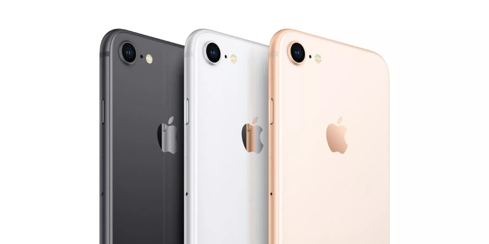

During the study, researchers used an fMRI scanner to image the brains of 32 teenagers as they used a fictitious social media app resembling Instagram. The teenagers were shown more than 140 images where "likes" were believed to be from their peers. However, the likes were actually assigned by the research team.
As a result, the brain scans revealed that in addition to a number of regions, the nucleus accumbens, part of the brain's reward circuitry, was especially active when they saw a large number of likes on their own photos. According to researchers, this area of the brain is the same region that responds when we see pictures of people we love or when we win money. What's more, researchers say that this reward region of the brain is particularly sensitive during the teen years, which could explain why teens are so drawn to social media.
Participants in the study were shown both neutral photos and risky photos. What they found is that the type of image had no impact on the number of likes given by teens in the study. Instead, they were likely to hit "like" on the popular photos regardless of what they showed. Researchers believe this behavior shows that peers can have both a positive and negative influence on others while using social media.
 THE REAL ARTICLE
THE REAL ARTICLE
